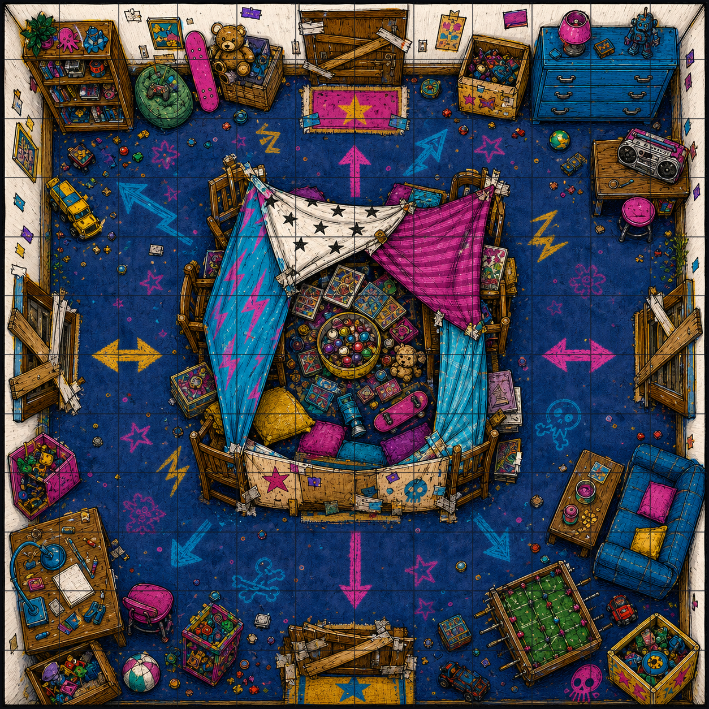
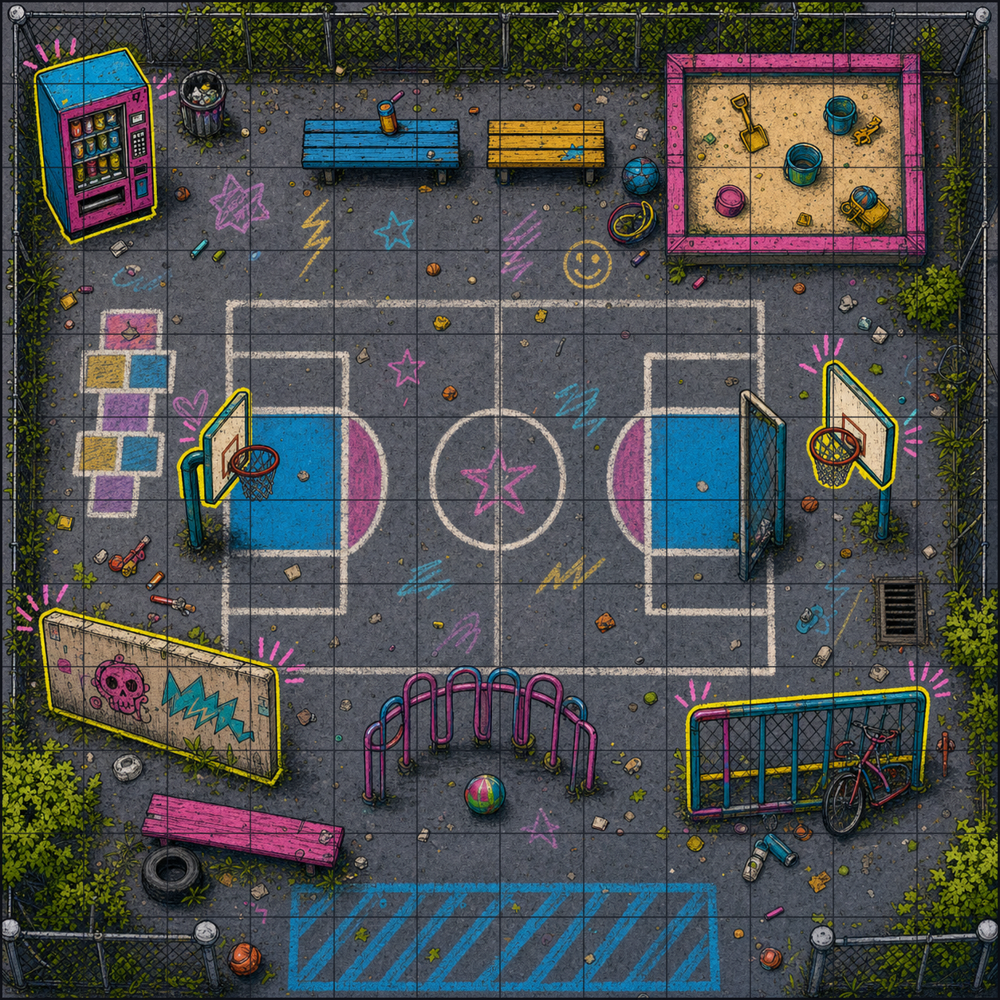
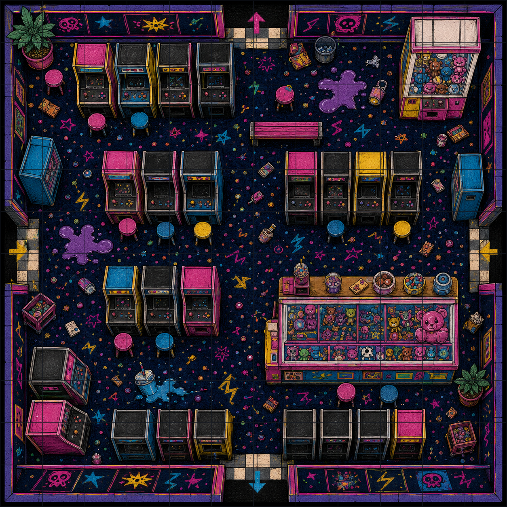

Mapas imprimibles 12×12

El Vecindario
Puertas, aceras, casas y tareas del barrio.

El Cuartel General
Fuerte central, barricadas y entradas por los cuatro lados.

El Patio del Colegio
Pistas, vallas, objetivos y cobertura escolar.

El Recreativos
Pasillos de máquinas, premios y charcos de refresco.
Recursos del repositorio
- Carpeta de imágenes editoriales y enemigos
- Mapas SVG tácticos estilo Game Boy
- Utilidades JS para crear pandillas
- Parciales Markdown fuente
- Reglas básicas adaptadas a cuadrícula
- Anexo de normas oficiales sin casillas
- Equipo, tiendas y cachivaches
- Generador de nombres de peques
- Generador de nombres de pandilla